כל הלוגואים
Better Me · סבב 2 (23.10)נדחה
הסבב הראשון, עם Beem, האור בגומה והטבעות, נכתב באותם קבצים, ולכן נשאר רק השני. "אף אחת".
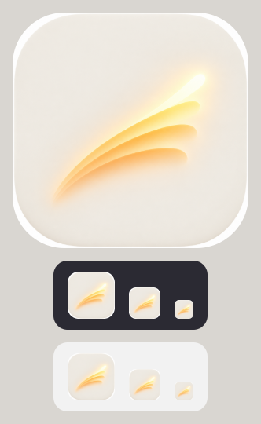
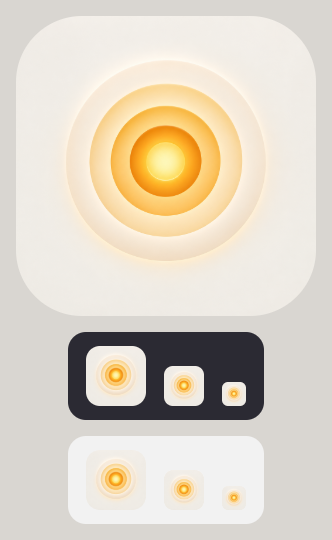
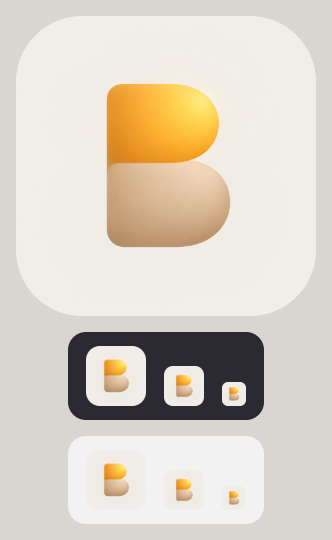
Better Me · סבב 3, הכתום מובילנדחה
"נראים כמו סמל של בנק".
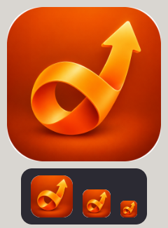
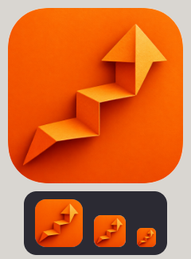
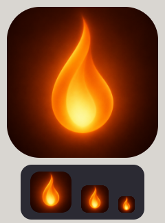
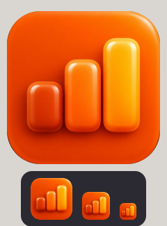
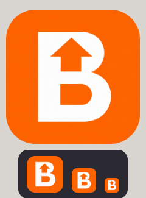
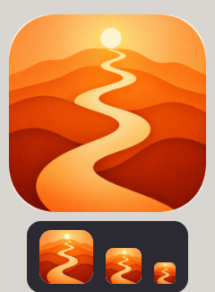
Better Me · סבב 4, חם ואנושינדחה
עברנו הלאה בלי לבחור. מכאן הגיע הרעיון: "Better Me" ובסוף נקודה כתומה.
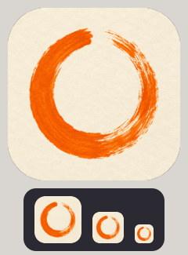
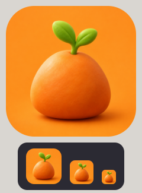
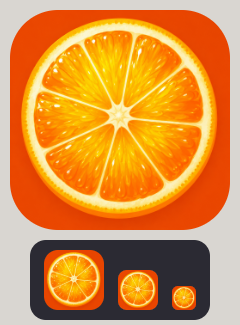
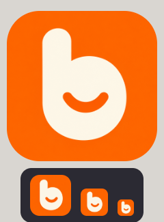
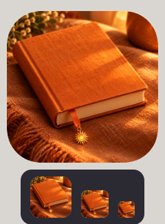
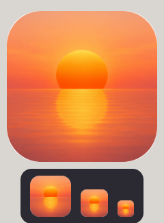
Better Me. עם השמש (23.10)נבחר, ואז הוחלף
Fraunces 700, והנקודה הכתומה הפכה לשמש של 9 נקודות ("מזכיר את האזורים"). כתום על שמנת. שוחרר ליציב, ואחר כך התברר שהשם תפוס.
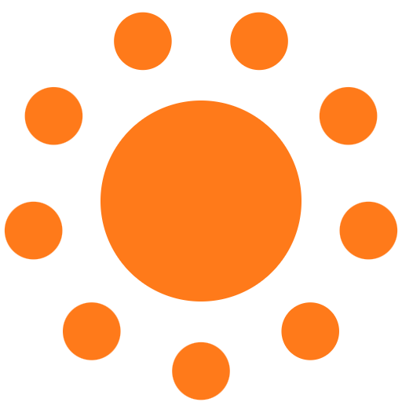
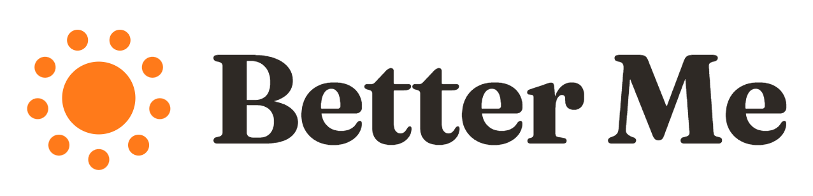
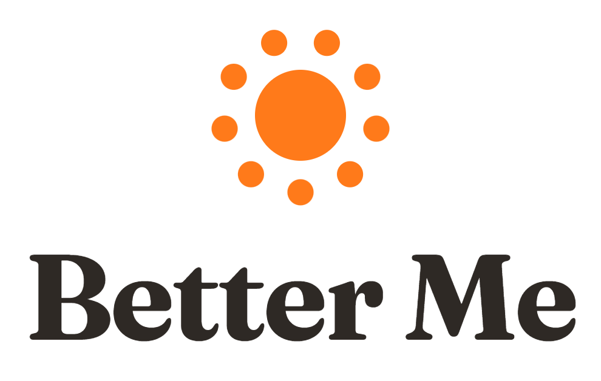
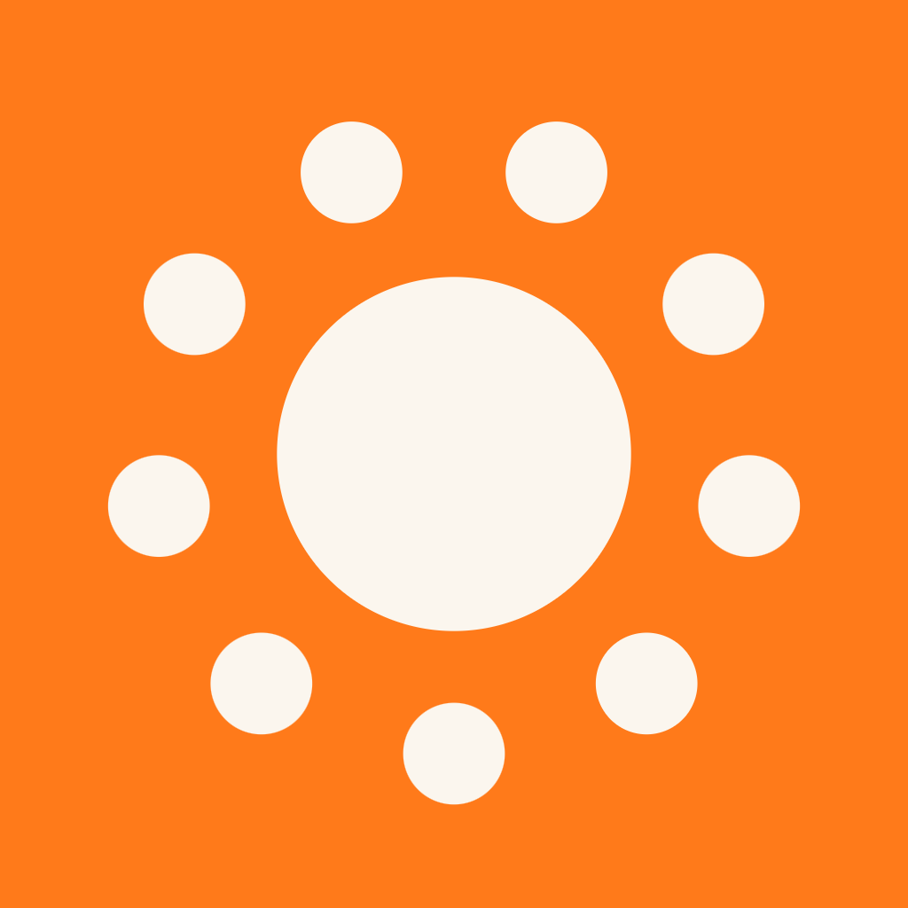
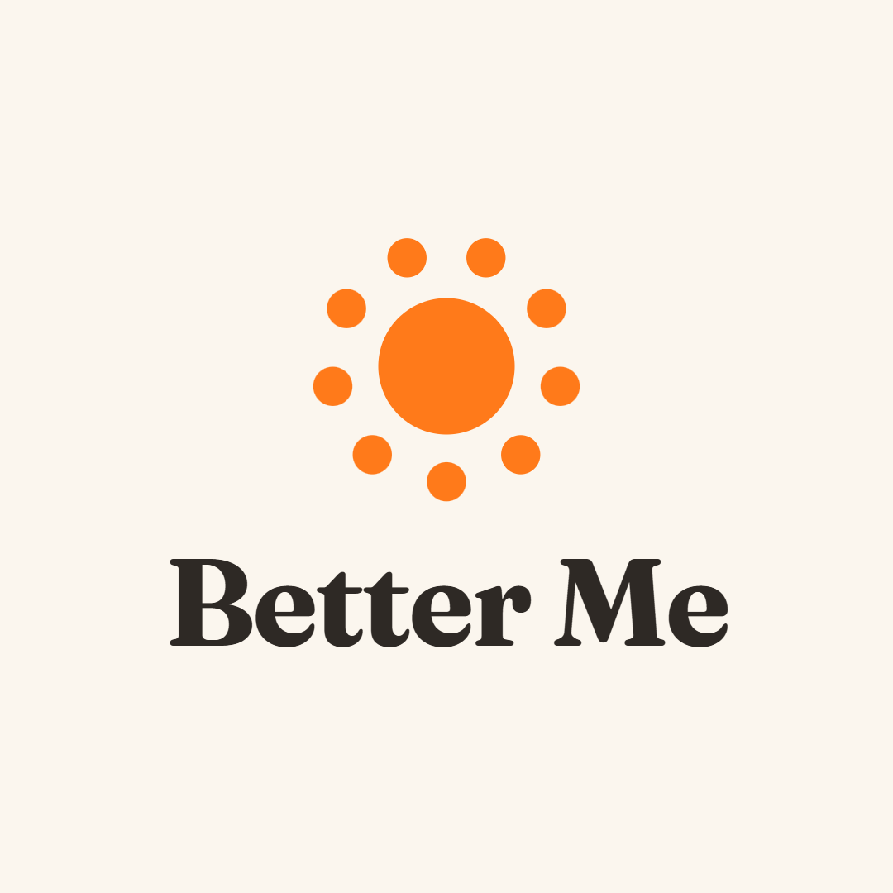
Olimei (24.10)נבחר
השם החדש, נקנה. Fraunces 700, והשמש היא הנקודה של ה־i האחרונה (אפשרות B). את גרסאות "ה־O היא השמש" דחית, ו־G (ה־i הראשונה בכתום) היה שני.


האייקון: Mip (25.10)נבחר, באוויר
ליד הינשוף של דואולינגו השמש נראתה "דלה, אנמית, זולה". הדמות נהייתה האייקון: ג1, Mip גדול על שמנת. שוחרר ליציב, וגם לבנייה של האייפון ושל אנדרואיד.